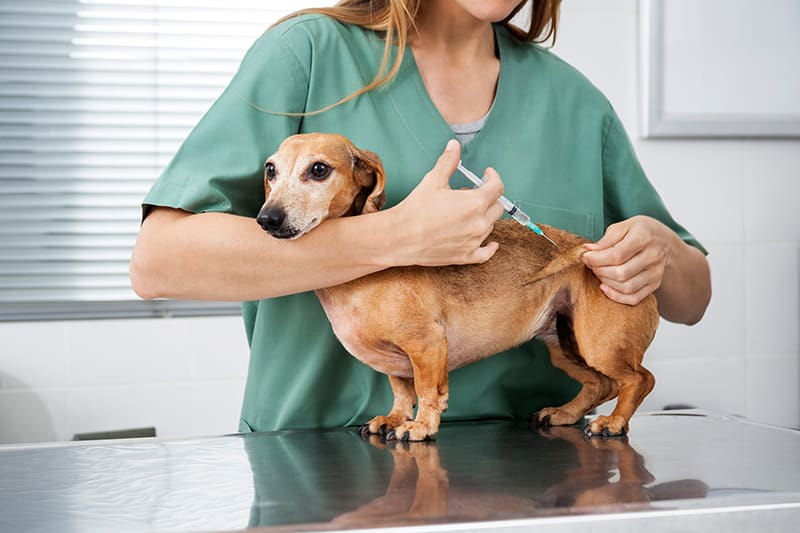
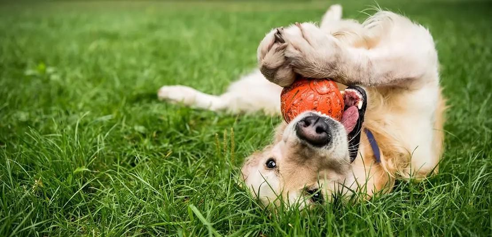

الكلاب
نبذة تعريفية: الكلاب هي حيوانات أليفة وفية، تُعتبر من أفضل أصدقاء الإنسان. تأتي بأحجام وأشكال متنوعة.
سلوكيات: الكلاب اجتماعية وتحب اللعب. يمكن تدريبها على تنفيذ الأوامر والتفاعل مع البشر.
احتياجات: تحتاج الكلاب إلى طعام متوازن، وماء، ورعاية بيطرية منتظمة.
طريقة العناية: يجب الاهتمام بنظافتها، وتمشيط فرائها، وتوفير بيئة آمنة لها.
التطعيمات:
- تطعيم داء الكلب: يجب أن يتم عند عمر 3-6 أشهر.
- تطعيم البارفو: يجب أن يتم عند عمر 6-8 أسابيع، ثم جرعة ثانية عند 10-12 أسبوع.
- تطعيم التهاب الكبد: يجب أن يتم عند عمر 6-8 أسابيع، ثم جرعة ثانية عند 10-12 أسبوع.
معلومات شيقة: الكلاب يمكنها تمييز المشاعر البشرية وتستجيب لها، مما يجعلها حيوانات مميزة في الدعم النفسي.

